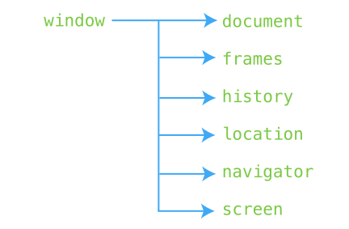

Browser Object Model in JS

document: Contains all HTML elements of the current page.
frames: Any frames embedded within the current page.
history: Contains a stack of sites visited in the current session.
location: Stores URL of the current page.
navigator: Stores information about the browser being used, and the OS
used by the browser.
screen: Display properties of the user's computer or device.
Window object:-
closed: Returns True if window is closed.
defaultStatus: Set the text on the status bar.
innerHeight: The inner height of the page (not including toolbar, other
tabs, etc).
innerWidth: The inner width (excludes toolbar, other tabs, etc.).
outerHeight: The outer height of a window (including toolbar, other tabs,
etc).
outerWidth: The outer width of a window.
location: Window's current URL.
name: Name of the window.
parent: Used with frames to refer to the window that created a particular
window or is one level up from the frame.
parent: Reference to the window that the current window came from.
pageXOffset: The number of pixels user has scrolled horizontally from the
upper-left corner of document.
pageYOffset: The number of pixels the user has been scrolled
vertically.
screenX: Horizontal coordinate of the window relative to the screen.
screenY: Vertical coordinate of the window relative to the screen.
top: The top-most parent window.
Window Methods:-
alert(): Opens a popup window. User must click OK to close.
prompt(): Prompts user for an input
open(): Opens new browser window with specified URL.
close(): Closes window.
print(): Opens print dialog.
Moving a window object:-
moveBy(): Move the window relative.
moveTo(): Moves the window to a specific location.
resizeBy(): Change size of window relative to current size.
resizeTo(): Change size of window to specified size.
Screen:-
The window.screen object obtains information about the user's screen.
availHeight, availWidth: Width and height of the available screen
(excluding taskbars).
height, width: Width and height of the available screen (with taskbars).
colorDepth: Number representing the bit depth of the color palette on
user's screen.
Navigator:-
The window.navigator object is used to query a number of elements about
the visitor's browser and environment.
language: Determine language of browser.
appName:Check name of browser.
geolocation: Returns geolocation object used to locate user's position.
onLine: Determines if user is online.
platform: Which platform user is using (OS X, Windows, Linux).
cookieEnabled: Determines whether cookies are enabled.
javaEnabled(): Check if user's Java is enabled.
Location:-
The window.location object provides information about the current URL.
hash: Returns anchor part of a URL.
host: Returns hostname and port number of URL.
pathname, port: Returns path or nort number of URL.
hostname: Returns hostname of a URL.
origin: Returns protocol, hostname and portname of a URL.
assign(): Loads new document.
reload(): Reload current document.
replace(): Replace current document.
History:-
The window.history gives you information regarding the user's history. Due
to security concerns, we can't directly access which URL's our users have
visited, but we may find other parameters.
length: Return the length of the user's history.
back(), forward(): Move the user forward or back a page.
go(): Loads specific URL from history list.